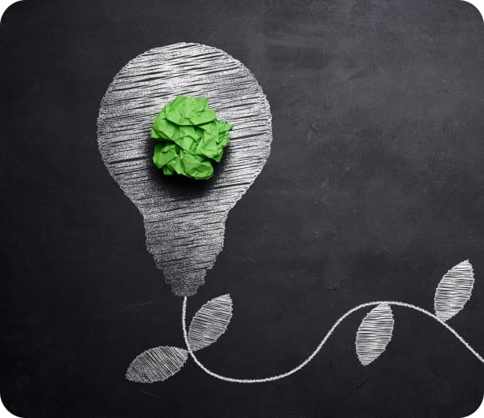
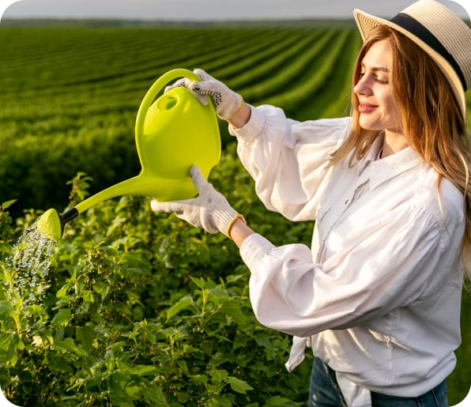

Welcome to the Heart of Green Haven Harvest
Future health through sustainable harvest.
-
Our Mission
Creating a sustainable future through responsible farming.
-
Eco-Friendly Practices
Championing the health of our planet with every seed sown.
-
Natural Products
Dedicated to purity and natural goodness, from our fields to your table.
Our Story
Explore our path
- 
The Seed of an Idea
It all began with a small patch of land and a big dream. Faced with the harsh realities of industrial farming, our founders sought a more harmonious way to cultivate the land. They envisioned a network of farms that would not only respect the earth but thrive alongside it.
-
Growth Through Challenges
As our network expanded, so did the obstacles. Battling unpredictable weather, navigating the complexities of organic certification, and educating the community about the benefits of sustainable agriculture were just a few hurdles we overcame. Each challenge strengthened our resolve and deepened our commitment to our mission.
- 
Flourishing Network
Today, Green Haven Harvest stands as a testament to the power of sustainable practices and community support. Our network of eco-conscious farms supplies consumers with wholesome, natural products, while also safeguarding the planet for future generations. Our journey is a living example of what can be achieved with passion and perseverance.
Quality Assurance
Ensuring Excellence in Every Harvest
-
Rigorous Standards
Every product is subjected to strict quality control measures, ensuring they meet our high standards for purity and sustainability.
-
Eco-Certifications
Our products proudly bear certifications from leading eco-friendly and organic institutions, affirming our commitment to the planet and healthy living.
-
Continuous Testing
Ongoing soil and water testing procedures are integral to our operations, guaranteeing the highest level of safety and quality in every harvest.